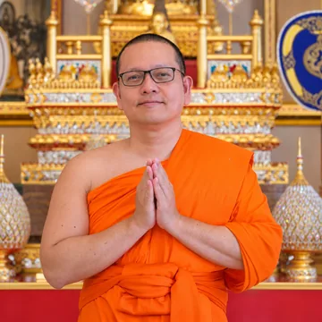
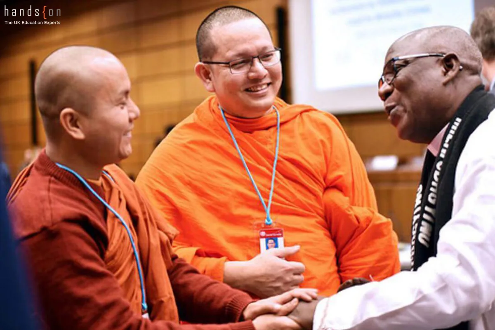
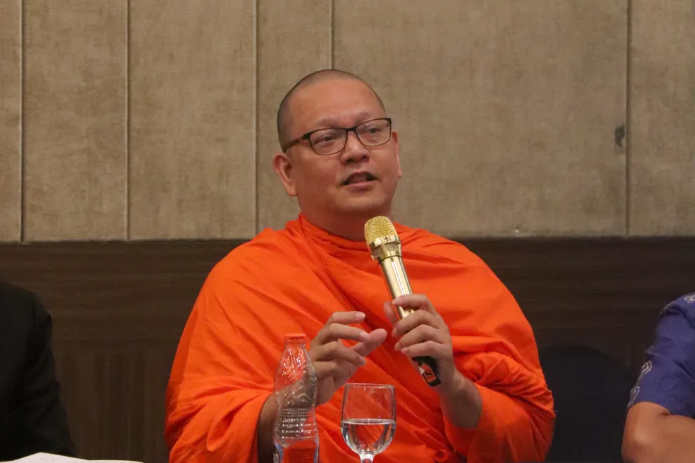
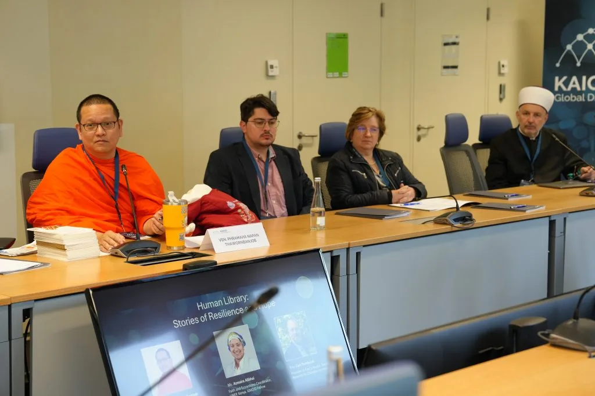

การพัฒนาคนและการศึกษา
ออกแบบกระบวนการเรียนรู้และฝึกอบรมด้านคุณธรรม จริยธรรม ภาวะผู้นำ และการพัฒนาศักยภาพ โดยเริ่มจากงานกลุ่มเพื่อชีวิตดีงาม (For Beautiful Life Group) ตั้งแต่ พ.ศ. 2544
ดูข่าวและผลงานที่เกี่ยวข้อง ↗VEN. NAPAN · LIFE & WORK
Venerable Napan Santibhaddo (Thawornbanjob)
พระนักพัฒนา นักสร้างสันติภาพ และนักสื่อสารพระพุทธศาสนา ผู้เชื่อมหลักธรรมเข้ากับการพัฒนาคน สังคม สันติภาพ สิทธิมนุษยชน การเสวนาระหว่างศาสนา และการพัฒนาที่ยั่งยืน

FROM NOVICE TO SOCIAL ENGAGEMENT
พระมหานภันต์บวชสามเณรภาคฤดูร้อนด้วยความสมัครใจตั้งแต่อายุ 7 ปี ก่อนบรรพชาเป็นสามเณรที่วัดสระเกศราชวรมหาวิหารเมื่ออายุ 11 ปี และอุปสมบทเป็นพระภิกษุใน พ.ศ. 2543 โดยได้รับฉายา “สนฺติภทฺโท”
ประสบการณ์การไปศึกษาและใช้ชีวิตในต่างจังหวัดตั้งแต่วัยสามเณรทำให้ท่านเห็นความสัมพันธ์ระหว่างวัด ชุมชน และวิถีชีวิตของผู้คนอย่างใกล้ชิด ประสบการณ์นี้กลายเป็นรากฐานของแนวคิดการใช้พระพุทธศาสนาในฐานะทุนทางสังคม เพื่อสร้างการเปลี่ยนแปลงเชิงบวกและพัฒนาสังคมอย่างยั่งยืน
“ต้องการตอบแทนสังคม” — แรงตั้งต้นที่พระมหานภันต์กล่าวถึงในการอธิบายเหตุผลของการทำงานด้านสังคมและการพัฒนา
AREAS OF WORK
ผลงานของพระมหานภันต์ครอบคลุมตั้งแต่การเผยแผ่ธรรมะและการพัฒนาคน ไปจนถึงสันติภาพ สิทธิมนุษยชน ความร่วมมือระหว่างศาสนา และ SDGs
ออกแบบกระบวนการเรียนรู้และฝึกอบรมด้านคุณธรรม จริยธรรม ภาวะผู้นำ และการพัฒนาศักยภาพ โดยเริ่มจากงานกลุ่มเพื่อชีวิตดีงาม (For Beautiful Life Group) ตั้งแต่ พ.ศ. 2544
ดูข่าวและผลงานที่เกี่ยวข้อง ↗ทำงานกับชุมชนและผู้นำศาสนาในพื้นที่ภาคใต้ของไทย เพื่อเยียวยาผู้ได้รับผลกระทบ ป้องกันความขัดแย้ง และสร้างพื้นที่อยู่ร่วมกันอย่างสันติ
สำรวจงานด้านสันติภาพ ↗ขับเคลื่อนแนวคิดการนำคุณค่าทางพระพุทธศาสนามาเชื่อมกับเป้าหมายการพัฒนาที่ยั่งยืน ทั้งในระดับชุมชน ประเทศ และเวทีนานาชาติ
ดูคลิปด้านสังคมและ SDGs ↗สร้างความร่วมมือกับผู้นำและเครือข่ายศาสนาต่าง ๆ ผ่านการสนทนา การฝึกอบรม และเวทีนานาชาติ เพื่อเสริมความเข้าใจและความไว้วางใจ
ดูสื่อจากหน่วยงานภายนอก ↗ต่อยอดประสบการณ์งานสันติภาพสู่การศึกษาและทำงานเชิงระบบด้านสิทธิมนุษยชน รวมถึงความร่วมมือกับคณะกรรมการสิทธิมนุษยชนแห่งชาติ
อ่านบทสัมภาษณ์และข่าว ↗ใช้ทั้งโทรทัศน์ สื่อดิจิทัล รายการสนทนา และโซเชียลมีเดียเป็นพื้นที่สื่อสารธรรมะและประเด็นสังคมกับผู้คนหลากหลายกลุ่ม
เปิดคลังวิดีโอทั้งหมด ↗
EDUCATION & FORMATION
เส้นทางการศึกษาของพระมหานภันต์ครอบคลุมทั้งพระปริยัติธรรม การศึกษา การบริหารรัฐกิจ ภาษา การสื่อสาร สันติศึกษา และสิทธิมนุษยชน
SELECTED MILESTONES
คัดเลือกเหตุการณ์ที่มีแหล่งข้อมูลรองรับ เพื่อให้เห็นพัฒนาการจากการศึกษาพระธรรม สู่การทำงานพัฒนาคน สันติภาพ และความร่วมมือระดับนานาชาติ
ได้รับฉายา “สนฺติภทฺโท” และสืบต่อเส้นทางการศึกษาและการเผยแผ่พระพุทธศาสนา
เริ่มต้นงานพัฒนาคนอย่างเป็นระบบผ่านการฝึกอบรม การเรียนรู้เชิงประสบการณ์ และการพัฒนาตนบนฐานไตรสิกขา
สำเร็จการศึกษาพระปริยัติธรรมระดับสูงสุดจากสำนักเรียนวัดสระเกศ
ทำหน้าที่ผู้ดำเนินรายการในโครงการสามเณรปลูกปัญญาธรรม ซึ่งรายการได้รับ Cannes Corporate & Media Awards 2013
ขยายงานจากการพัฒนาคนสู่การประยุกต์พระพุทธศาสนากับความสุข สันติภาพ และการพัฒนาที่ยั่งยืน
สำเร็จ M.A. ด้าน Corporate Communications, Marketing and Public Relations และเป็น Chevening Alumni
กล่าวปาฐกถาในพิธีวิสาขบูชาครั้งแรกที่รัฐสภายุโรปในหัวข้อเชื่อมสันติภาพภายในกับ SDGs และได้รับคัดเลือกเป็น KAICIID Fellow รุ่นปี 2018
มีชื่อเข้าร่วม COP16 ในบทบาทด้าน Spiritual and Faith Communities และได้รับ Chevening Alumni Award 2024 ตามชีวประวัติ ICCS 2025
ร่วมเวที ICCS 2025 ที่สิงคโปร์ในฐานะผู้ทำงานด้านสังคมพหุวัฒนธรรม สันติภาพ และการเสวนาระหว่างศาสนา
ศึกษาต่อด้าน Human Rights and Democratisation และเป็นผู้นำเสนอหลักในกิจกรรมของ World Council of Churches เรื่องการเสวนาระหว่างศาสนาผ่านมุมมองพุทธ
REGIONAL & GLOBAL ENGAGEMENT

ประสบการณ์ของพระมหานภันต์เชื่อมตั้งแต่งานสันติภาพในพื้นที่ภาคใต้ของไทย ไปสู่การทำงานกับเครือข่ายด้านศาสนา สันติภาพ การพัฒนาที่ยั่งยืน และความร่วมมือระหว่างประเทศ
ชีวประวัติ ICCS 2025 ระบุการมีส่วนร่วมในเวทีสำคัญ อาทิ UN Fez Plan of Action, พิธีวิสาขบูชาที่รัฐสภายุโรป, Interfaith G20 Forum, COP16 และ COP29
PEACE & HUMAN RIGHTS
หลังทำงานกับชุมชนที่ได้รับผลกระทบจากความรุนแรงมาอย่างต่อเนื่อง พระมหานภันต์ต่อยอดประสบการณ์เข้าสู่การศึกษาด้านสิทธิมนุษยชน โดย Global Campus of Human Rights ระบุว่าท่านเข้าศึกษาในหลักสูตร APMA ที่สถาบันสิทธิมนุษยชนและสันติศึกษา มหาวิทยาลัยมหิดล
หัวข้อวิทยานิพนธ์มุ่งศึกษาการเสริมสร้างความร่วมมือระหว่างองค์กรสิทธิมนุษยชนกับสถาบันพระพุทธศาสนา และการนำการศึกษาด้านสิทธิมนุษยชนเข้าสู่เครือข่ายศาสนา

WATCH & EXPLORE
หน้าโปรไฟล์เชื่อมเข้ากับวิดีโอ ข่าว คำคม และคลังพิเศษที่มีอยู่ใน PMNapan Library เพื่อให้สำรวจงานของพระมหานภันต์ตามประเด็นได้ต่อเนื่อง
บันทึกกิจกรรม World Council of Churches ซึ่งพระมหานภันต์เป็นผู้นำเสนอหลักด้านการเสวนาระหว่างศาสนาผ่านมุมมองพุทธ
LATEST FROM THE ARCHIVE
SELECTED READING
WORDS & IDEAS
PRIMARY & INSTITUTIONAL SOURCES
ข้อมูลในหน้านี้คัดจากประวัติและเอกสารที่เผยแพร่โดยวัด/มูลนิธิ องค์กรการศึกษา และเครือข่ายระหว่างประเทศที่ทำงานร่วมกับพระมหานภันต์
หน้าโปรไฟล์เลือกใช้เฉพาะข้อมูลที่มีแหล่งเผยแพร่รองรับ และหลีกเลี่ยงรายละเอียดที่ยังพบข้อมูลไม่สอดคล้องกันระหว่างแหล่งอ้างอิง
ปัจจุบันคลังมี — วิดีโอ · — ข่าว/บทสัมภาษณ์ · — ภาพคำคม และคลังพิเศษที่เชื่อมโยงกับงานของพระมหานภันต์